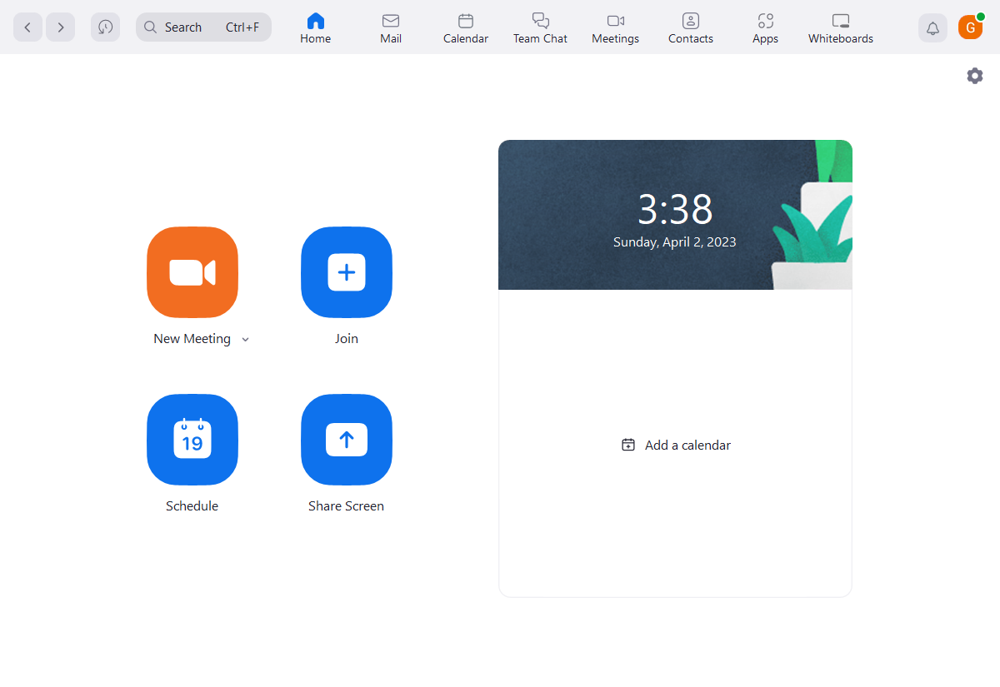
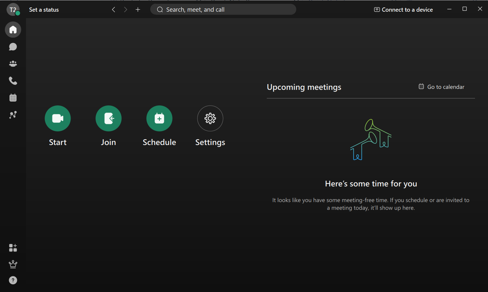
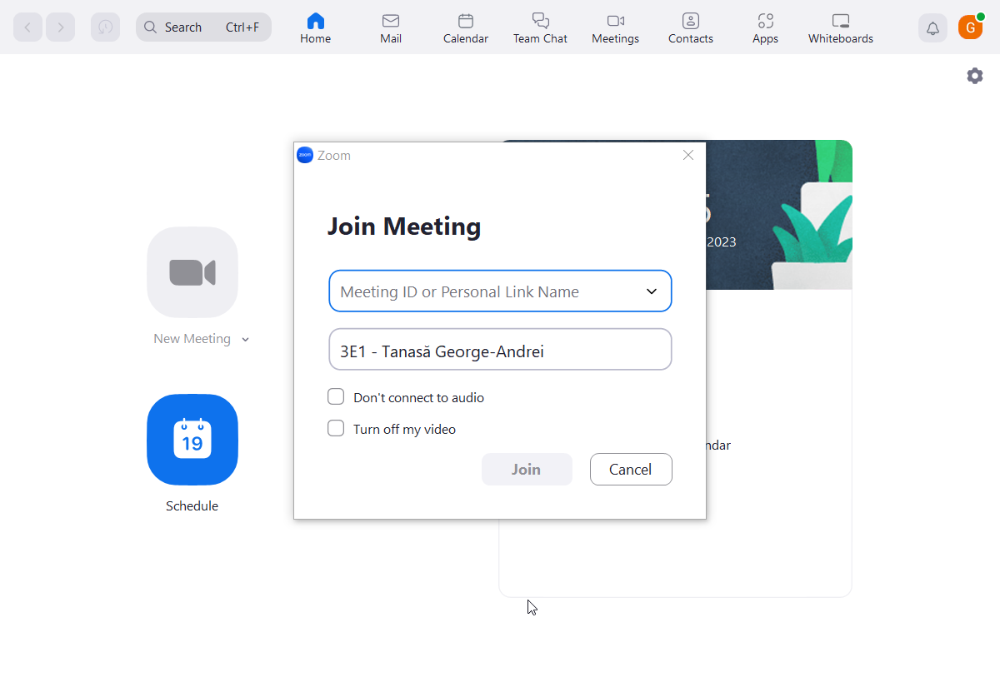
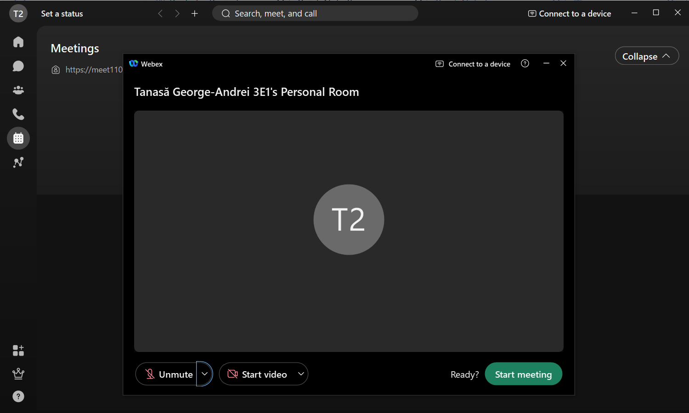
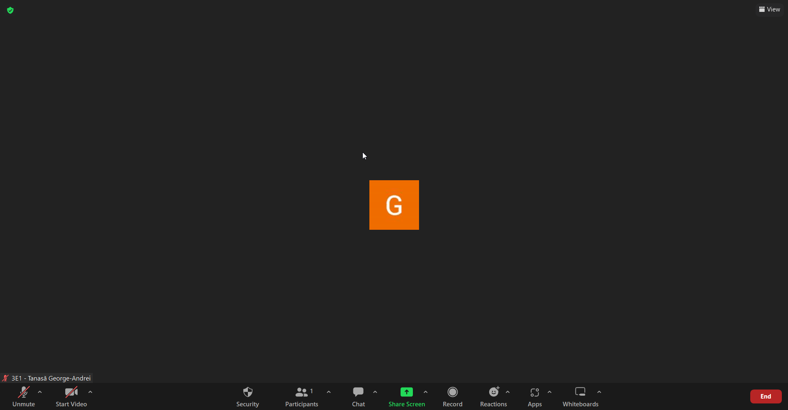
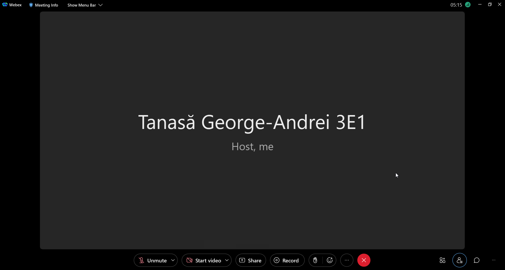
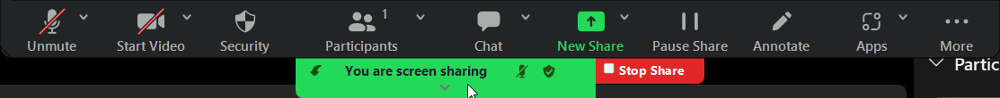
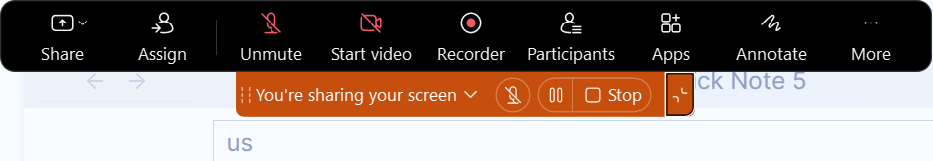

Remote Communications
Autori : Baciu Eduard Alexandru, Puscasu Florin, Tanasă George-Andrei
Use Flow, Affordances, and Visual Variables
Use Case: delivering an academic presentation.
For an easier explanation of the use flows, affordances and visual variables we separate the interaction with the desktop apps for Zoom and WebEx into 3 distinct stages:
1. Opening the meeting
2. Entering the meeting
3. Presentation
Opening the meeting
Foremost in case the user open the meeting from a link, skip to Entering the meeting.
Otherwise, the user opens the app and sees the next two screens for Zoom and respectively WebEx:
 The structure of both home pages is similar with only small differences. Both present a page with 4 buttons, a sidebar with buttons that changes the current page with additional controls to traverse the page history, a search bar a button for account options and an area that shows upcoming events.
For our use case the users would press the join button, which, for both apps, has the largest size on the page, is labeled and colored for high contrast with the background.
As a side note, it's assumed that a user is more likely to enter through a link directly into the meeting. As such the join button is the second button on the page for both applications, the first button being dedicated for creating a meeting and the third for scheduling a meeting. The fourth button is where it starts to vary in purpose WebEx has a button that bring you to the settings while Zoom has a button that opens a meeting and shares your screen. All the buttons slightly changes the color when hovered to indicate to the user that they are interactable.
Once the user press the join button a new menu appears for both apps which prompts them to input the meeting ID or link. After inputting the required information the user can enter the meeting.

The Zoom menu gives the user more options before entering the meeting while WebEx has a more direct approach. Both also present a history of previous meeting credentials allowing you to quickly renter them. Zoom also gives you feedback in the form of the join button changing color to indicate that there can be an attempt at entering the meeting. WebEx doesn't give any feedback on the validity of the credentials.
Entering the meeting
Before fully entering the meeting, WebEx presents the user with an additional window. Which allows the user to quickly set our audio input and output devices, camera settings and the state of the microphone and camera.
Once the user entered the meeting both apps have similar layouts with slight but important differences. Both have a central area that displays a participants screen and/or the video feeds from the other meeting participant if they have the setting active. On the bottom there is an options bar which contains buttons for a microphone control, camera control, screen share, chat, participants, live emoticon reactions and a few other app specific features. Each with an additional drop-down menu, accessible trough preassign the small arrow to the right of each button, which hold additional settings. Additionally hovering over each button give extra information and a hotkeys.
In Zoom, by default, the bottom bar becomes invisible when the user doesn't move the mouse. Allowing the user to focus on the meeting and not be distracted by other elements. While in WebEx it remains permanently on screen allowing for faster checkup on the state of the microphone and camera feed. Enhancing this is the fact that the buttons for the microphone and the camera only slightly left of the center of the screen allowing for less eye movement.
 The 3 buttons that are useful for our use case are the ones for the microphone, camera, and share screen. For both Zoom and WebEx the buttons for microphone and camera have red accent while turned off. And while the microphone is on it gains a fluctuating green accent within the microphone icon to indicate that the microphone is working.
Presentation
Once the user start the presentation they can turn on the microphone, the camera, and share their screen by using the aforementioned three buttons. Afterwards for both Zoom and WebEx the user is prompted to chose which screen or application they want to share, with some additional settings. After everything has been selected the app overlaying at the top of the screen a menu bar implementing most of the controls from the bottom bar in the meeting window.
 You can also minimize the menus and move them around in other part of the screen as to not get in the users way. In the minimize form they provide the ability to stop the screen sharing and or change to another screen or window. The stop button being colored with a bright contrasting color. Zoom also outlines the shared area with a contrasting color to demarcate what other participants are seeing.
Improvements
Both apps have similar layouts and features with the ability to further customize the behavior and interface of both apps. As a result there is little to improve as they have already underwent multiple UI revisions over the years until they have reached this point.
Visual metaphors and idioms & CLI
Metaphors and idioms
Since both Zoom and Webex are remote communication apps they have many similarities between them (Jakob’s Law — Users spend most of their time on other sites. This means that users prefer your site to work the same way as all the other sites they already know.), but they also have some considerable differences. For example the applications use most of the same metaphors because they best represent the function of the buttons and are most other apps also use them making the user more familiar with them.

But they don’t use the same overall structure Webex has no home screen and has the functionalities presented above in the Meetings section of the client and doesn't make them directly accessible to a new user, while Zoom has them in the home screen as the first thing you see when opening the app.
While in a meeting the interface is largely the same users going from an app to another of the same type having an easy time adapting to the change.

One of the bigger differences here being that WebEx offers the user a “Menu Bar” at the top with drop-down sections that offers a more experienced user quicker access to all the functionalities available compared to the normal more intuitive buttons at the bottom and Zoom has no such tools and has its functionalities placed only on the buttons.
CLI
For text-only interactions the buttons can be made into intuitive commands such as :
-
mic -m|um self|all|<username>-muting / unmuting your microphone or someone else’s
-
msg all|host|<username> <text>-sending a message in the meeting
-
get participants
-
get chatHistory
-
get commands
-
get emotes
-
emote <emotename>
And other commands available only to the host :
-
msg block all|<username>
-
kick <username>
-
admit all|<username>
Cognitive overload in special conditions/contexts
Due to the simple and intuitive structure of the applications cognitive overload doesn’t tend to be a problem to a user, but it can appear in certain situations. Mostly it can happen when there are too many people in one meeting and the participants are not divided into smaller rooms, in those cases the host can mute all participants and unmute them as they have to speak, but this is not a problem that can be solved by changing the interface.
New users can go into cognitive overload when the first try to share their screen as doing so minimizes both of the apps entirely. Zoom makes the buttons appear once you hover over a certain area of the screen. This can confuse people due to the sudden change and the lack of explanation making it harder to use even the basic functions of the app like the chat or seeing the participants. In this aspect WebEx does a better job the Zoom by giving the user the ability to minimize/maximize the utility bar at will by pressing a button and allowing the controls to always be in view, but it still does not fix the grater issues created by changing the general layout of the application.

This concern doesn’t exist in some apps such as Discord, that only shares your screen to the other participants without changing how you view the app.
Multi-platform improvements
These improvements are for both Zoom and WebEx, and on both mobile and desktop platforms.
Customizable Video/Share Screen Layout
UX/UI Problem: Some users might want to organize the different video feeds in a particular way for different reasons. Curranty the user has only the option to watch one share screen at a time and to only pin one user.
Solution: We should allow the user to enable an advance mode in which they can place the video feeds either on a free form canvas or a grid based canvas, similar to a security system. The free form canvas method would allow the layer to place and size the videos on an surface, similar to cards on a table in real life. The grid based system would allow the user to place the feeds anywhere on a customizable grid having them snap in either one or multiple blocks.
Stats for nerds
UX/UI Problem: There is not enough data on why someone's meeting quality may decrease.
Solution: Allow the affected participant and/or the meeting owner to have an additional window that allows them to see relevant information to the video and audio stream similar to YouTube's Stats for Nerds feature.
Customizable Layout
UX/UI Problem: Some users may prefer to have a specific layout like having the meeting controls to the sides rather than the bottom of the window.
Solution: Allow the user to drag and drop the UI elements in different positions as well as to detach into sperate windows and to snap them back into the main window.
Reconsideration of empiric laws
In the context of multi-device interaction, where a user may be using multiple devices to participate in the same meeting, these laws may need to
apply reconsidered or adapted. Here are some ways this can happen:
Fitt's Law: Fitt's Law states that the time required to move to a target is a function of the distance to the target and the size of the target.
In the context of interacting with multiple devices, targets may be spread across multiple screens or devices, and the distance between them may
be vary. Designers can customize Fitts Law by taking into account the distance and size of targets on different devices and ensuring they are
easily accessible and distinguishable
Hick's Law: Hick's Law states that the time required to make a decision is a function of the number of options available.
When interacting with multiple devices, the user may have multiple options to perform the same action, such as using keyboard shortcuts or touch
gestures.
Designers can adapt Hicks' Law by minimizing the number of options and providing a clear and consistent mapping between operations and inputs
method.
Steering Law: Steering Law states that the time required to navigate a target through a path is a function of the amplitude and width of the path.
In the case of interacting with multiple devices, users may need to navigate destinations and paths between them across multiple screens or devices
and length and width may vary. Designers can customize Steering Law by accounting for path complexity and providing clear visual cues and
feedback that guides the user through the navigation process.
Features that can be added to improve the experience:
-
In the conversation with a person, there should be a button where you can set the messages you receive from them to be read and
spoken audio by an TTS.
- Virtual Hand Raising: Zoom has a "raise hand" feature that allows participants to signal they want to speak, but it's not very prominent, and it's easy to miss.
A more visible and customizable virtual hand-raising feature would be helpful.
- A button to set how many voices to hear from you, if there are more voices than you have set, then it will automatically mute you. Measure against accidentally
overheard conversations on Zoom/Webex.